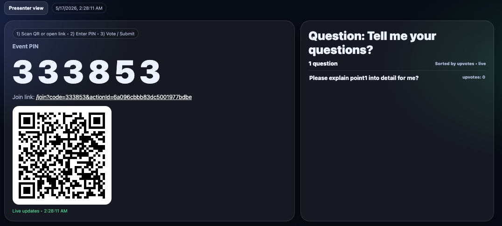
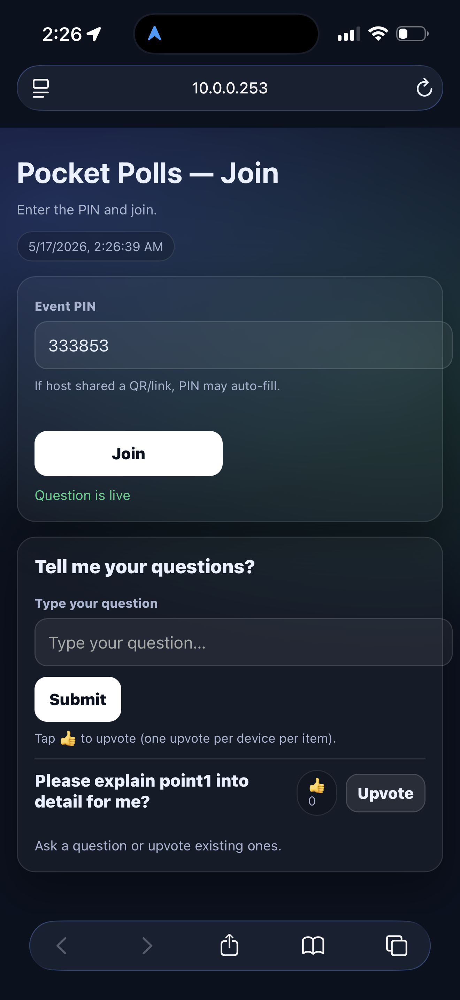
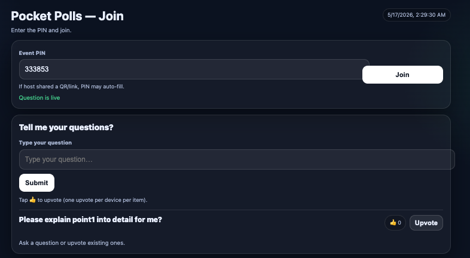

Control the event, publish questions, open/close polls, and reset votes.
HCC Course Project
Pocket Polls
A live classroom polling and Q&A system that helps presenters collect audience questions, manage participation, and display live responses in real time.
Students join by PIN or QR code, submit questions, and upvote existing ones.
A clean live display for classroom screens and presentation settings.
Problem & Design Goal
Motivation
In many classroom and presentation settings, students may hesitate to ask questions publicly, especially in large groups or fast-paced sessions. Pocket Polls was designed to make participation easier, faster, and more inclusive by allowing participants to submit and upvote questions from their own devices.
The goal is to help presenters quickly understand what the audience needs most and respond to the highest-priority questions in real time.
Study Setup
Online Study
The project supports an online or hybrid study where participants access a join page through a shared link, QR code, or event PIN. Once connected, they can submit questions and upvote questions already posted by others.
The host dashboard tracks live activity, while the presenter view displays the PIN, QR code, and audience questions. This setup allows us to examine how live question submission and voting support engagement and presenter-audience communication.
Prototype
Interfaces
Pocket Polls is organized around a simple workflow: the host manages the session, participants join and contribute questions, and the presenter view displays what is live.
The screenshots below show each interface.
Host
Host Dashboard
The host controls the live session from one dashboard: create a Q&A question, load recent polls, publish selected questions, close the poll, and reset votes when needed.

Click to view full image
Presenter
Presenter View
A screen-friendly view shows the event PIN, QR code, and live audience questions for the room.

Click to view full image
Mobile
Mobile Participant View
Participants can join using the event PIN, submit questions, and upvote the most useful questions.

Click to view full image
Desktop
Desktop Participant View
The interaction also works on desktop, making the tool flexible for in-person, hybrid, and online use.
Evaluation
User Studies — Round 1 & 2 Results
The user studies focused on whether the system’s core workflow was understandable: joining a poll, submitting a question, upvoting, and viewing live questions as the presenter.
Core interaction testing
Initial testing focused on whether users could join with a PIN, submit a question, and understand the upvote interaction.
Refinement and clarity
The design was refined to make host controls clearer, improve participant layout, and make the presenter view easier to read during live use.
Participation made easier
Pocket Polls supports real-time audience participation by reducing the pressure of speaking publicly and giving presenters a clearer view of the most important audience questions.
Demo
Short Video Demo
The demo shows the complete Pocket Polls workflow: the host creates or loads a poll, participants join using a PIN, submit questions, upvote existing questions, and the presenter view updates with live audience activity.